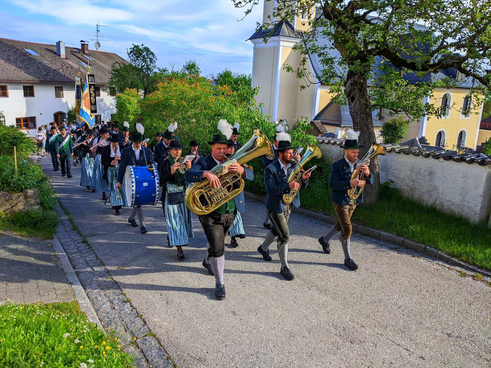
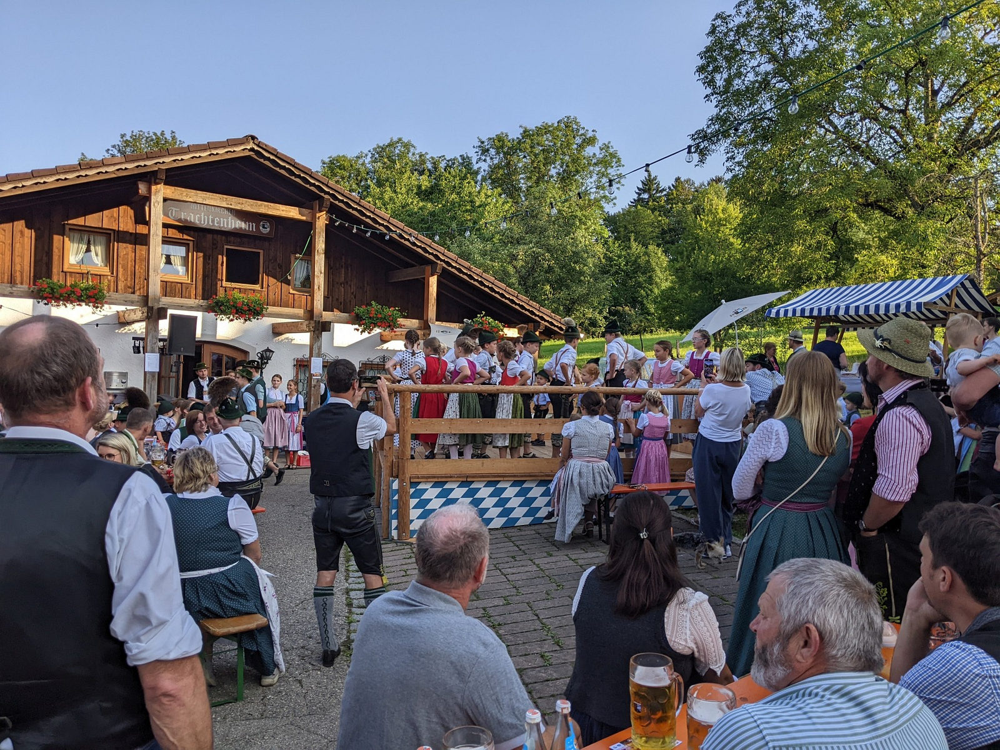
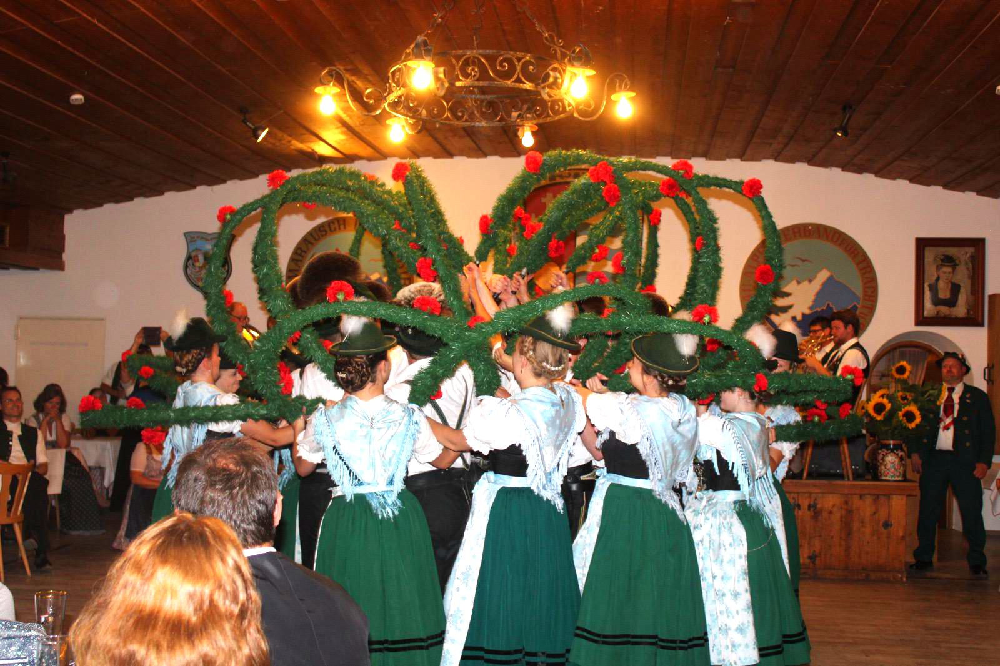
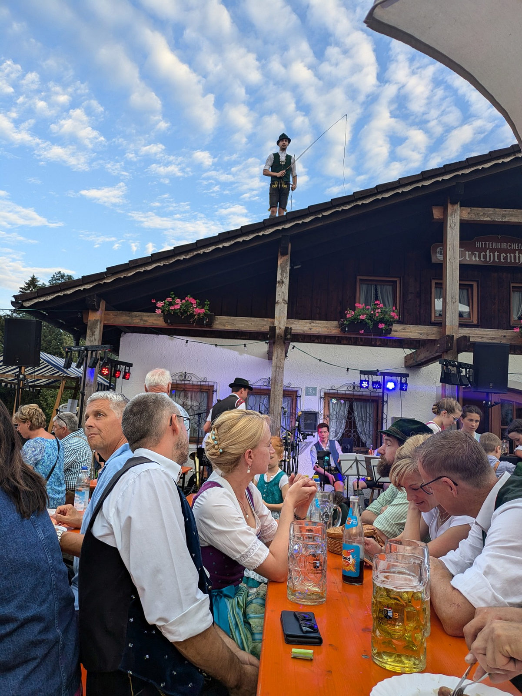
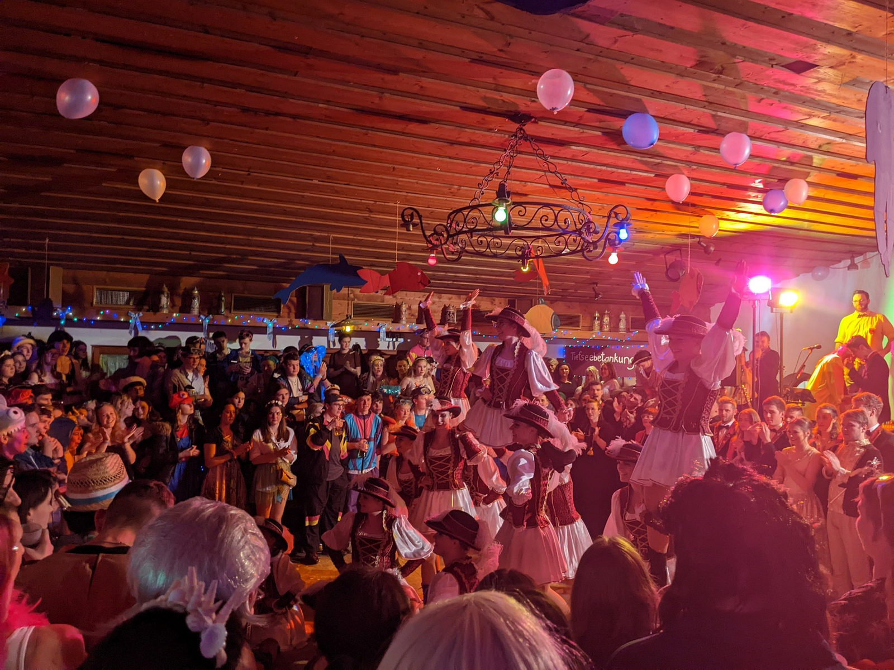
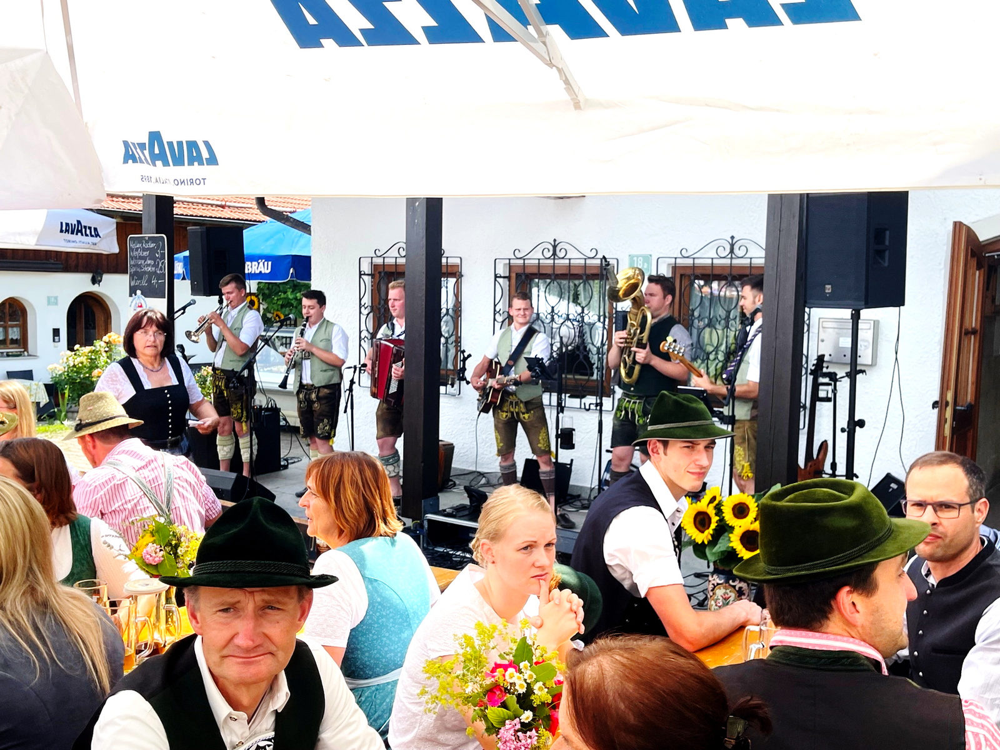
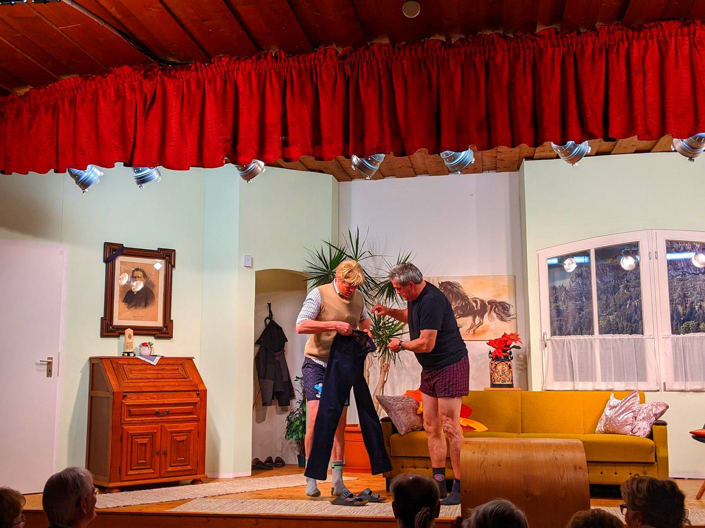

GTEV „Almarausch" – Brauchtum, Tracht und Gemeinschaft im Chiemgau, gepflegt mit Herz seit 1921.
Der Gebirgstrachten-Erhaltungsverein „Almarausch" Hittenkirchen ist mit knapp 400 Mitgliedern fest im Leben der Gemeinde Bernau am Chiemsee verwurzelt. Wir pflegen die typische Chiemgauer Tracht, den Volkstanz und das Plattln – und tragen unser Brauchtum über die Generationen weiter.

Dorffest in HittenkirchenWir tragen die für diese Gegend typische Chiemgauer Tracht. Was heute einheitlich wirkt, war früher so verschieden wie die Menschen: Erst 1936 einigte man sich bei den Dirndltrachten auf eine gemeinsame Form – finanziell unterstützt vom Verein.
Vom Kinderdirndl über die Aktiven bis zur Erwachsenentracht ist jedes Gwand mit Sorgfalt zusammengestellt – Stoffe, Farben und Zierrat folgen einer langen Tradition.

Reiftanz der DirndlgruppeAls 1975 in der damals noch selbstständigen Gemeinde Hittenkirchen das erste Trachtenheim im Chiemgau nach eigenem Bedarf, eigenen Vorstellungen und in eigener Regie entstand, war das ein mutiger Schritt. Bis heute ist es Herzstück des Vereinslebens.
Trotz der finanziellen Belastungen des Baus wurde über die Jahrzehnte viel investiert – vom Ausbau des Kellers über neue Fenster und Küche bis zu Heizung und einem neuen Kachelofen. 2025 feierte das Haus sein 50-jähriges Bestehen.

Trachtenheim HittenkirchenVon der ersten Probe im Januar bis zum Weinfest im Oktober – so lebt das Brauchtum bei uns durchs Jahr.
Das Trachtenjahr beginnt mit dem Volkstanzkurs für Jugendliche – sein „Abschlussball" ist der traditionelle Rosenmontagstanz.
Das eigentliche Vereinsjahr startet mit dem Jahrtag samt Kirchenzug, Gottesdienst und Versammlung im Trachtenheim – dazu die stimmungsvolle Maiandacht.
Wir beteiligen uns an der Bittwallfahrt des Gauverbandes nach Raiten und an der heimischen Fronleichnamsprozession.
Das Kirchenpatrozinium wird – egal an welchem Wochentag – immer groß gefeiert, mit der ganzen Dorf-, Kirchen- und Vereinsgemeinschaft.
Beim Dorffest vor dem Trachtenheim und beim Vereinspreisplatteln zeigen Mädels und Buam ihr Können – bei Speis, Trank und guter Musi.
Den Abschluss des Vereinsjahres bildet ein Musikantenhoagascht – ein von den Aktiven organisiertes Weinfest.

Mit viel Liebe zum Detail verwandeln die Damen das Trachtenheim passend zum Motto – die zahlreichen Gäste wurden auch heuer nicht enttäuscht.
Weiterlesen →
Bei herrlichem Sommerwetter luden die Ortsvereine zum traditionellen Dorffest – mit Einlagen der Mädels und Buben und bestens gefüllten Plätzen.
Weiterlesen →
Ob „Der Pantoffel-Panther" oder „Hexenschuss" – unter der Leitung von Franz Wörndl strapazieren die Theaterer drei Stunden lang die Lachmuskeln.
Weiterlesen →Ein Auszug aus unserem Vereinskalender. (Beispieltermine – die aktuellen Daten pflegt der Verein hier ein.)
Du möchtest mitmachen, hast Fragen zum Verein oder zu einer Veranstaltung? Wir freuen uns auf deine Nachricht.